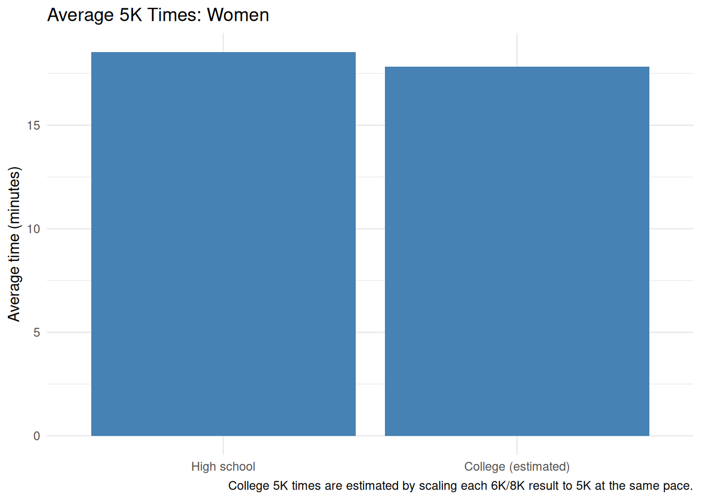

How are runners’ high-school 5K times related to their college cross-country times, and how might weather and course terrain help explain differences?
Data collection
I will collect up to 2,000 U.S. college cross-country runners (men and women) with results in the five most recent completed seasons, 2021–2025. For each runner, I will record their best verified high-school 5K and a college 6K or 8K result. Because these are different distances, I will keep the distance with each time rather than compare the raw times as if they were equivalent.
TFRRS will be used to find college results. I will verify each high-school 5K and record its source link; I will not assume a missing high-school result is zero. I will also record the meet, date, weather, and course terrain for both selected races where that information is available. Missing weather or terrain information will be left blank rather than guessed.
Data fields
Each row will represent one runner. The planned columns are:
Field
What to record
athlete, gender, college
Runner identity and college team
high_school_5k, hs_race_date
Verified high-school 5K time and date
college_distance, college_time, college_race_date
College 6K or 8K result
hs_weather, college_weather
Reported conditions or temperature
hs_terrain, college_terrain
Course description, such as flat or hilly
hs_source, college_source
Links to the supporting result pages
Weather and terrain may not be listed on TFRRS result pages, so I will only include those variables when I can verify them from a meet or course source.
Comparing finish times
The graphs below compare the average high-school 5K time with an estimated college 5K time for men and women. Since the recorded college races are 6K or 8K, their times are scaled to 5K using the same average pace. These college 5K times are estimates, not actual 5K results.
To make the graphs, save the verified data as runners.csv in this folder. Use one row per runner, and enter high_school_5k and college_time in seconds (for example, 17:30 is 1,050 seconds). The CSV must also include gender and college_distance columns.
library(dplyr)
Attaching package: 'dplyr'
The following objects are masked from 'package:stats':
filter, lag
The following objects are masked from 'package:base':
intersect, setdiff, setequal, union
if (nrow(average_times |>filter(gender =="Female")) >0) {print( average_times |>filter(gender =="Female") |>ggplot(aes(x = stage, y = average_minutes)) +geom_col(fill ="steelblue") +labs(title ="Average 5K Times: Women",x =NULL,y ="Average time (minutes)",caption ="College 5K times are estimated by scaling each 6K/8K result to 5K at the same pace." ) +theme_minimal() )} else {cat("Add matched female runner records to runners.csv to create this graph.")}

Male runners
if (nrow(average_times |>filter(gender =="Male")) >0) {print( average_times |>filter(gender =="Male") |>ggplot(aes(x = stage, y = average_minutes)) +geom_col(fill ="darkorange") +labs(title ="Average 5K Times: Men",x =NULL,y ="Average time (minutes)",caption ="College 5K times are estimated by scaling each 6K/8K result to 5K at the same pace." ) +theme_minimal() )} else {cat("Add matched male runner records to runners.csv to create this graph.")}
Add matched male runner records to runners.csv to create this graph.